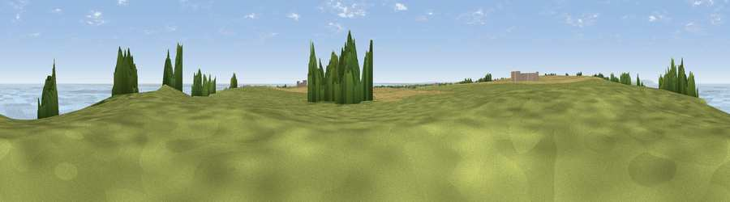

Viewpoint near Bempton
#5689 in England · top 24% of its area beats it · near BemptonThe view, rendered

A 360° render of this exact spot computed from the terrain model, tree cover and land cover — summer colours, afternoon light, calibrated against photographs of famous viewpoints. Real trees, hedges and buildings will differ in detail.
The panorama
Grey silhouette: terrain skyline in each direction (720 bearings, Earth curvature and refraction included). Dashed green: skyline with trees (+15 m) and buildings (+8 m) as obstacles. Blue strip: how far the ground is visible on each bearing.
Where the view opens
Wedge length = distance to the farthest visible ground on that bearing (vegetation-aware). Rings at 10, 25 and 50 km.
What fills the view
42% water · 33% grassland · 16% cropland · 4% woodland
Angular shares of the visible panorama (visual magnitude), not map area. Landscape diversity 0.51 (0–1 Shannon).
Key numbers
More beautiful places nearby
The staircase of upgrades: each row has a higher view potential than everything closer. Driving times are estimates from straight-line distance, calibrated against real road routing — check an actual route before setting out.
| Place | Direction | Drive | Score |
|---|---|---|---|
| Viewpoint near Bempton | WNW · 1 km | ~2 min | 70.2 |
| Viewpoint near Bempton | WNW · 2 km | ~6 min | 72.8 |
| Viewpoint near Speeton | WNW · 4 km | ~10 min | 74.4 |
| Viewpoint near Speeton | WNW · 7 km | ~14 min | 80.0 |
| Olivers Mount | NW · 22 km | ~37 min | 80.3 |
| Viewpoint near Ravenscar | NW · 36 km | ~54 min | 82.7 |
| Viewpoint near Ravenscar | NW · 37 km | ~56 min | 87.3 |
| Viewpoint near Ravenscar | NW · 38 km | ~57 min | 90.0 |
54.13990, -0.14605 · source: screening · position refined by local search. Computed location — check access rights before visiting.